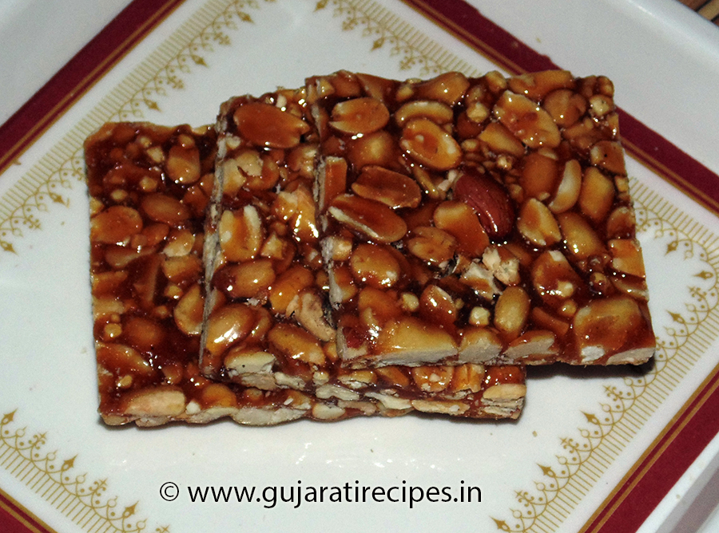

shingchhiki Recipe |
| Rateing |
| prep time:20 minit |
| cook time:20 minit |
| total time:40 minit |
|  |
Ingredients: |
400 gm Peanut (Roasted and removed skin)
250 gm Jaggery
1.5 tbsp Ghee
|
Instructions: |
|
Grind peanut coarsely.
Heat ghee in a pan at slow flame.
Add Jaggery and stir well.
Stir till jaggery melt and appear golden color.
Mix peanut and grease plain surface.
Spread this mixture on surface.
Using both hands makes it like round shape.
Roll out according to thickness.
Cut it in to square or any shape. Store in an air tied container. |
video: |